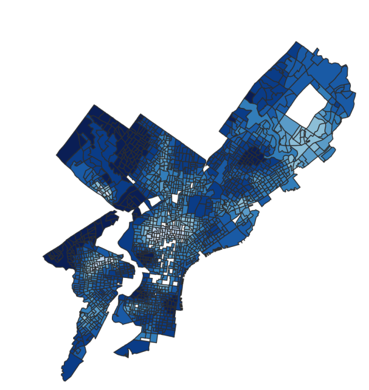

Spatial statistics
Spatial Lag Models for Philadelphia Housing Values
This paper compares spatial lag, spatial error, and geographically weighted regression models to understand how nearby areas and local conditions shape median housing values across Philadelphia block groups.
Open paper PDF